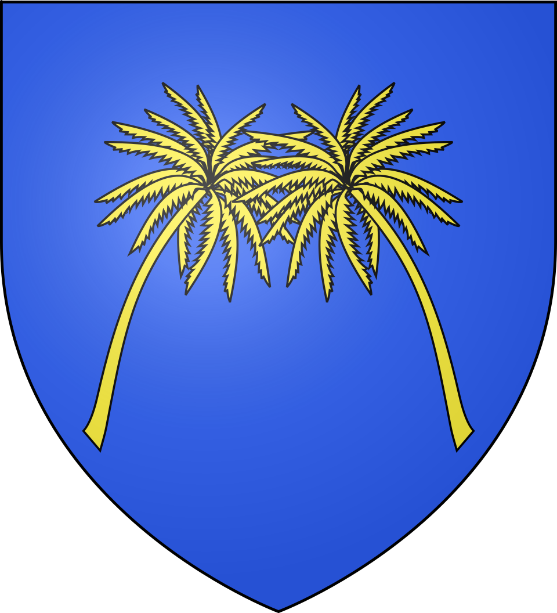
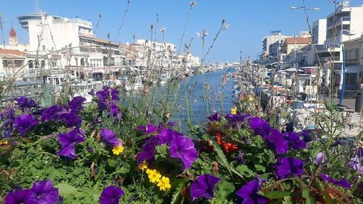

Villeneuve-lès-
Maguelone
Presqu'île Sacrée


⟹ Cathédrale · Étangs · Lido ⟸

Maguelone, un site majeur du haut Moyen Âge. Au milieu des lagunes littorales, la presqu’île de Maguelone occupe une position exceptionnelle entre la Méditerranée et les étangs. Ce relief légèrement surélevé, longtemps presque insulaire, offre à la fois protection, accès maritime et contrôle des voies lagunaires.
Un évêché attesté dès le VIe siècle. Maguelone devient très tôt un centre chrétien important et le siège d’un diocèse. Avant l’essor de Montpellier, qui n’apparaît véritablement qu’à la fin du Xe siècle, Maguelone constitue l’un des principaux centres urbains et religieux de la région littorale.
VIIIe siècle : destruction et retrait vers l’intérieur. Dans le contexte des affrontements entre pouvoirs francs et musulmans, Maguelone est détruite au VIIIe siècle, traditionnellement associée aux campagnes de Charles Martel. L’évêque et les chanoines se retirent alors à Substantion, près de l’actuel Castelnau-le-Lez. Pendant plusieurs siècles, le vieux siège maritime perd une grande partie de son rôle.
XIe-XIIe siècles : le grand retour de Maguelone. À partir du XIe siècle, les évêques réinvestissent la presqu’île. Le site devient terre pontificale et retrouve une importance spirituelle et politique. Au XIIe siècle, l’évêque Arnaud entreprend de restaurer le port et de reconstruire la cathédrale Saint-Pierre dans un puissant style roman.

Une cathédrale fortifiée entre mer et étangs. La cathédrale de Maguelone est conçue comme un ensemble religieux capable de résister aux menaces du littoral. Ses murs épais, son architecture austère et son implantation isolée lui donnent l’allure d’une forteresse. Autour d’elle vivent évêques, chanoines, serviteurs et voyageurs, dans un domaine organisé autour du culte, de l’administration et de l’accueil.
Une place liée à la papauté et au monde méditerranéen. Aux XIe et XIIe siècles, Maguelone entretient des liens étroits avec Rome. Plusieurs papes y passent ou y trouvent refuge. Le site profite également de sa situation sur les routes maritimes et de la proximité de Montpellier, dont le commerce et le rayonnement intellectuel ne cessent de croître.
Villeneuve se développe sur le continent. Tandis que Maguelone reste le centre ecclésiastique, une nouvelle communauté d’habitat se forme sur la terre ferme. Cette « Villeneuve » organise progressivement sa vie autour de l’agriculture, de la vigne, des étangs et de l’église Saint-Étienne, construite au Moyen Âge.
1536 : transfert du siège épiscopal à Montpellier. La croissance de Montpellier, devenue grande ville marchande et universitaire, rend Maguelone de plus en plus marginale. Par une bulle du pape Paul III, le siège épiscopal est transféré à Montpellier en 1536. Ce changement constitue un tournant décisif : l’ancienne cité épiscopale entre dans une longue période de déclin.
1632 : démantèlement des défenses de Maguelone. Dans le contexte troublé du XVIIe siècle, une partie des fortifications et bâtiments est démantelée sur ordre royal afin d’éviter que le site ne puisse servir de place forte. La cathédrale est préservée, mais l’ensemble médiéval perd une grande partie de son organisation défensive et résidentielle.
Un territoire longtemps marqué par les étangs et les fièvres. La présence de vastes zones humides rend la vie difficile. Les moustiques et les maladies associées aux marais pèsent longtemps sur l’habitat. Parallèlement, les évolutions du commerce régional, la création du port de Sète en 1666 et la réorganisation des voies navigables réduisent l’importance économique de l’ancien secteur de Maguelone.
XIXe siècle : renouveau du village et transformation du littoral. Villeneuve connaît un nouvel essor grâce à la viticulture, à l’amélioration des communications et à l’assainissement progressif des zones humides. Sur le littoral, les cabanes de pêcheurs de Palavas prennent de l’importance et réclament leur autonomie.
1850 : Palavas devient une commune distincte. Malgré l’opposition de plusieurs communes voisines, dont Villeneuve, Palavas est érigée en commune par la loi du 29 janvier 1850. Cette séparation modifie durablement le territoire de Villeneuve et fixe une nouvelle organisation du littoral au sud de Montpellier.
Maguelone sauvée et réinvestie. À l’époque contemporaine, le domaine de Maguelone retrouve une vocation active. La cathédrale est restaurée et mise en valeur, tandis que le site associe viticulture, accueil culturel, action sociale et protection d’un environnement lagunaire exceptionnel.
Villeneuve-lès-Maguelone aujourd’hui : une commune héritière de deux histoires. Le village continental et l’ancienne cité épiscopale forment les deux pôles d’une même mémoire. L’un raconte la vie rurale et viticole du Bas-Languedoc ; l’autre conserve l’un des ensembles romans les plus puissants et les plus singuliers de tout le littoral méditerranéen français.
Villeneuve-lès-Maguelone porte l’héritage d’une ancienne capitale épiscopale : derrière le village actuel demeure la mémoire de Maguelone, cité de papes, d’évêques et de marins posée entre les étangs et la mer.
Repère synthétique — L'Âme des Régions